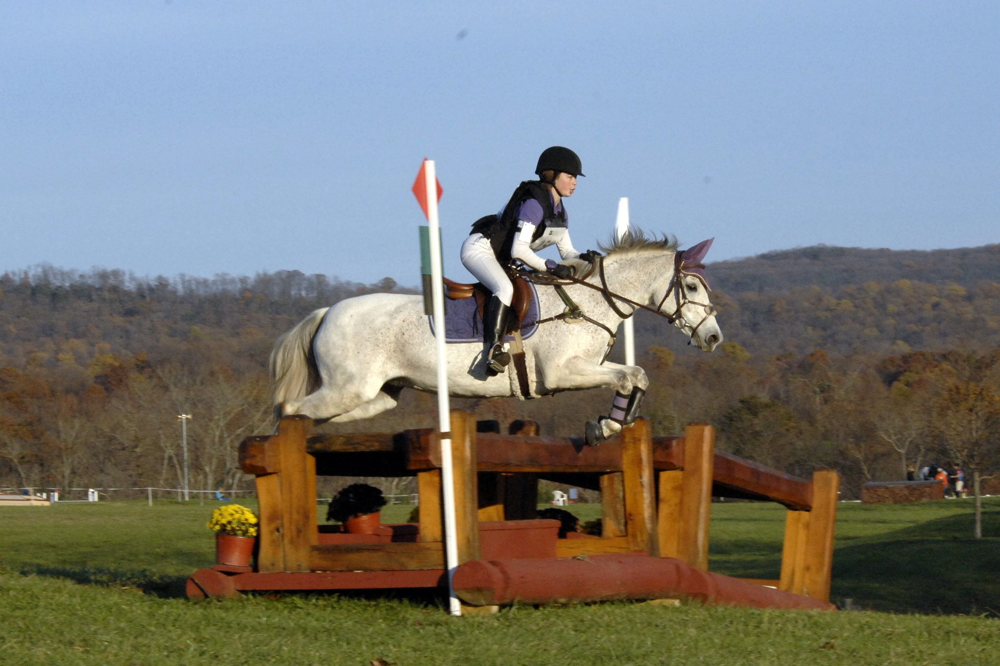

- Graduate Instructional Assistant - University of South Carolina
- Expected doctoral graduation from UofSC in 2025
- B.S. Mathematics - Millersville University of Pennsylvania - December 2019
- Career Goal: college professor

**** McKay on Tia at Loch Moy Farm, MD.